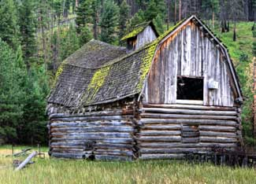

In many ways, the work of environmentalists (or anyone concerned with a healthy, sustainable world, whatever label they’ve given themselves) is about replacing or minimizing our impact on the Earth. But what would happen if humans, the culprit of so many environmental problems, just vanished?
You might wonder, if we’re no longer around, why it would matter to us what would happen? But asking and answering these questions provides an interesting and sometimes surprising perspective of how the way we live affects and alters the rest of the planet, from other species to the physical landscape. The answers reveal that some of what we consider our sturdiest creations wouldn’t last much more than a decade without us, yet some less tangible, seemingly less stable contributions may last millennia. Some species will disappear not long after us, either as winter arrives when there’s no one to turn on the heat, or after the last growing season, with no one to cultivate the next year’s crop. The exercise puts into perspective the decisions we’re making right now, and provides, in planetary terms, a long-term view of the repercussions of these decisions and subsequent actions.
What would happen to the infrastructure, power plants – even art? Looking at the innovations we’ve produced – concrete, plastics, etc. – how long would they last once abandoned to the elements? How would they break down, if they would; and what happens as they deteriorate? Not to mention plants, animals and bacteria. Which animals would miss us, and which would thrive in our absence? In what ways have we forever (or pretty darn close) changed the state of things on Earth?
In The World Without Us, Alan Weisman dissects the present and past with archeologists, engineers, biologists and myriad other experts to answer these questions. The premise that all homo sapiens suddenly disappear while everything else remains intact may be unlikely, but once you’re in, the book is packed with intriguing ideas and information. So, if all humans vanish, how long does it take for things to change, and what exactly happens? Here’s a quick look - from the book and WorldWithoutUs.com - at how some changes would unfold:
This short list is interesting, but the book is fun (in a geeky, quirky kind of way) and full of great trivia (who knew about the underground city Derinkuyu beneath Cappadocia, Turkey?). In the grand scheme of things, it may not matter what happens if we all mysteriously, simultaneously vanish – to us, anyway. In any case, if we’re the only thing that goes, it’s almost guaranteed that eventually the Earth will wear away most traces that we were ever here – well, except those pesky radio waves, but they’ll be long gone into space. But in posing and attempting to answer the question, The World Without Us provides an intriguing and informative look at the way we impact the world around us, and the effects and life cycles of that which we create and leave behind.
You can find The World Without Us at your local library or bookstore, or online at TheWorldWithoutUs.com.
Have you read The World Without Us? Yes or no, what do you think would happen if we vanished? Share your thoughts by posting a comment below.
|
 ISTOCKPHOTO All it takes is one 18-inch-by-18-inch hole in the roof of this barn to allow in the elements and bring the structure down in about a decade. Even without an opening in the roof, the barn would remain standing less than 100 years once abandoned. |
|
|